獨立音樂臺灣索引 // Indie Pop Music Index of Taiwan
獨立音樂用來描述有別於主流商業唱片廠牌所製作的音樂。顧名思義，獨立音樂的製作過程獨立自主，從錄音到出版都由音樂家獨力完成。獨立一詞可用以形容其他音樂類型，如獨立搖滾。雖然許多獨立音樂家的風格無法清楚界定，因而歸類到不同的音樂類型，但在一般說法上或音樂評論中依舊視為一種音樂類型，包括那些非獨立製作的音樂。
「獨立音樂」一詞，源於1980年代歐洲的後龐克(post-punk)，意旨「只作自己，而不願隨著一般龐克日益僵化之美學的龐克樂團和音樂廠牌」而後獨立音樂在英國也囊括了新浪潮(New Wave)、Jangle Pop等 ，而獨立音樂音樂在英國也演變成小型唱片公司所推出的音樂。 在美國，獨立音樂的發展可追朔於1970年代對於世界唱片體系的反動及主流搖滾的疲乏，人們開始轉往地下音樂發展，又以另類搖滾(alternative rock)為大宗，然而在另類搖滾(alternative rock)中具有代表性的Nirvana、Pearl Jam、R.E.M等樂團走紅並被主流唱片業簽下後，另類搖滾(alternative rock)逐漸向傳統流行音樂靠攏，而其他仍處在地下狀態，或是選擇保持自我風格的音樂流派便轉而使用「獨立音樂」(Indie)一詞來與「另類」(Alternative)作區別。
Independent music (often referred to as indie music or indie) is music produced independently from commercial record labels or their subsidiaries, a process that may include an autonomous, do-it-yourself approach to recording and publishing. The term indie is sometimes used to describe a genre (such as indie rock and indie pop), and as a genre term, "indie" may include music that is not independently produced, and many independent music artists do not fall into a single, defined musical style or genre and create self-published music that can be categorized into diverse genres.
Independent record label
Independent labels have a long history of promoting developments in popular music, stretching back to the post-war period in the United States, with labels such as Sun Records, King Records, and Stax.
In the United Kingdom during the 1950s and 1960s, the major record companies had so much power that independent labels struggled to become established, until the launch of new concepts like Virgin Records. Several British producers and artists launched independent labels as outlets for their work and artists they liked; the majority failed as commercial ventures or were bought by the major labels.
In the United States, independent labels and distributors often banded together to form organizations to promote trade and parity within the industry. The Recording Academy, famous as the organization behind the Grammy Awards, began in the 1950s as an organization of 25 independent record labels including Herald, Ember, and Atlantic Records. The 1970s saw the founding of the National Association of Independent Record Distributors (NAIRD), which became A2IM in 2004. Smaller organizations also existed including the Independent Music Association (IMA), founded by Don Kulak in the late 1980s. At its zenith, it had 1,000 independent labels on its member rosters. The 1990s brought Affiliated Independent Record Companies (AIRCO), whose most notable member was upstart punk-thrash rock label Mystic Records, and The Independent Music Retailer's Association (IMRA), a short-lived organization founded by Mark Wilkins and Don Kulak. The latter is most notable for a lawsuit involving co-op money it filed on behalf of its member Digital Distributors in conjunction with Warehouse Record Stores. The adjudication of the case grossed $178,000,000 from the distribution arms of major labels. The proceeds were distributed amongst all plaintiffs.
During the punk rock era, the number of independent labels grew. The UK Indie Chart was first compiled in 1980, and independent distribution became better organized from the late 1970s onward. From the late 1970s into the 1980s, certain UK independent labels (such as Rough Trade, Fast Product, Cherry Red, Factory, Glass, Cheree Records and Creation) came to contribute something in terms of aesthetic identity to the acts whose records they released.
In the late 1980s, Seattle-based Sub Pop Records was at the center of the grunge scene. In the late 1990s and into the 2000s as the advent of MP3 files and digital download sites such as Apple's iTunes Store changed the recording industry, an indie neo-soul scene soon emerged from the urban underground soul scenes of London, New York, Philadelphia, Chicago and Los Angeles, primarily due to commercial radio and the major labels' biased focus on the marketing, promotion & airplay of pop and hip hop music during this period. Independent labels such as Dome Record and Expansion Records in the U.K. and Burger, Wiener, and Ubiquity Records in the U.S. and a plethora of others around the world continue to release independent bands and music.